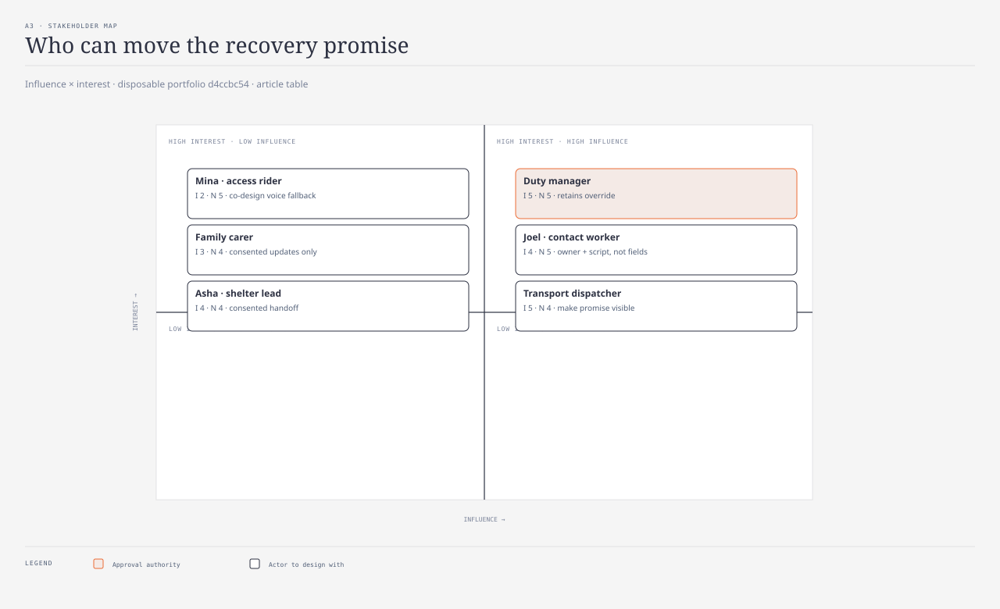

stakeholder-map · Liam · @sd-researcher · passed · d4ccbc54

| Stakeholder | Influence | Interest | Design implication |
|---|---|---|---|
| Resident with mobility constraint | 2 | 5 | Co-design and test voice fallback |
| Family carer | 3 | 4 | Consented updates only |
| Contact worker | 4 | 5 | Give an owner and script, not more fields |
| Transport dispatcher | 5 | 4 | Make the route promise visible |
| Shelter lead | 4 | 4 | Receive useful handoff context |
| Duty manager | 5 | 5 | Retains approval and override |